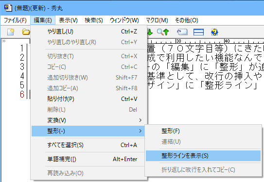
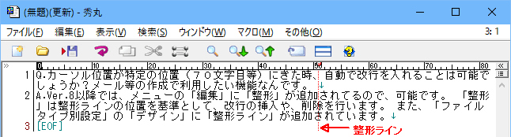
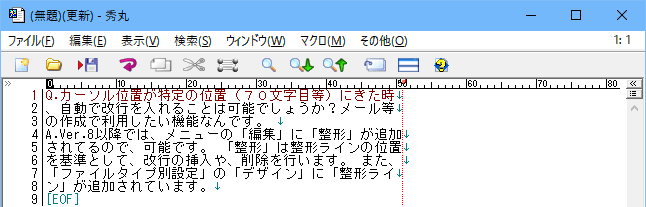
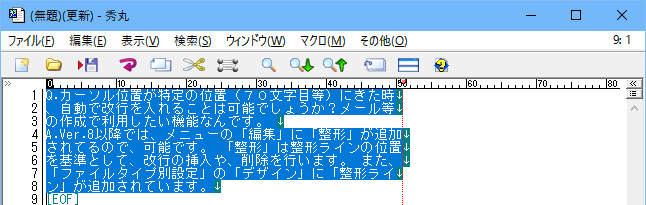
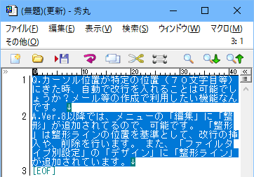

[HME0058A]
●１行の長さをそろえたい

- カーソル位置が特定の位置（７０文字目等）にきた時、自動で改行を入れることは可能でしょうか?メール等の作成で利用したい機能なんです。

-
自動で行う事は出来ませんが、Ver.8以降では「編集」メニューに「整形」が追加されました。これを使えば指定した桁で改行を入れる事が可能です。

「整形」は整形ラインの位置を基準として、改行の挿入や削除が行えます。また、「ファイルタイプ別設定」の「デザイン」に「整形ライン」が追加されています。
整形
行が整形ラインを超えている場合、整形ラインの桁数に改行を入れます。(赤色の縦線が整形ライン)

範囲選択していればその範囲を、範囲選択していない場合にはカーソルのある行を対象に動作します。

実行結果です。行番号が増えているので、改行が追加されている事がわかります。

連結
整形ラインの位置以降に改行がある場合、改行を削除して次の行と連結します。範囲選択していればその範囲を、範囲選択していない場合にはカーソルのある行を対象に動作します。

実行結果です。行番号が減っているので、行が連結されている事がわかります。
折り返しに改行を入れてコピー
折り返し部分に、改行を入れてコピーします。ウィンドウサイズで折り返しされているファイルで実行してみます。「コピー」なので、範囲選択を行います。

コピー先はウィンドウサイズを広げておき、そこに貼り付けます。折り返し部分に改行が入っているので、行が増えている事がわかります。